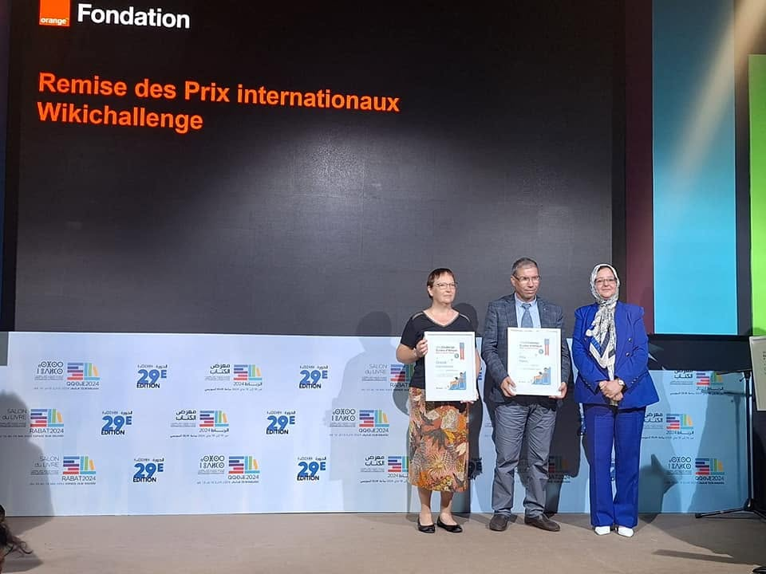
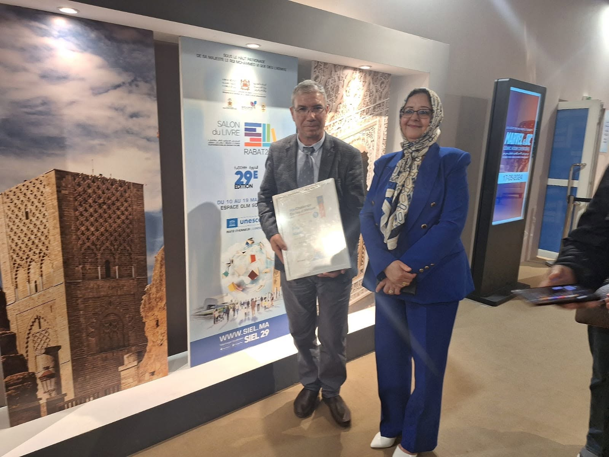
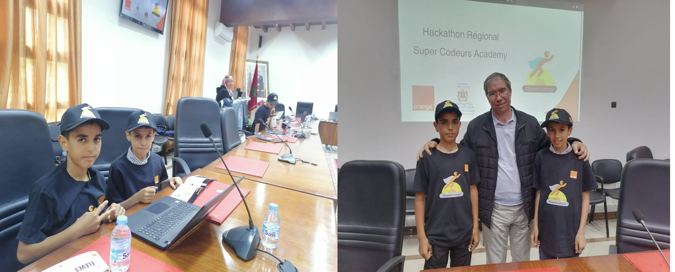

Éducation, engagement local et citoyen, technologie et développement d’applications
Enseignant et directeur d’établissementMembre du conseil communalActeur associatif et syndicalDéveloppeur d’applications mobilesGraphiste
Présentation
Mohamed Elkharoubi est enseignant et directeur du Groupe scolaire Barrage Al Wahda dans la commune de Lamjaara, province d’Ouezzane. Il est membre du conseil communal de Lamjaara, président de la commission attribuée à l’opposition au sein du conseil, et acteur associatif et syndical attentif aux affaires locales et aux préoccupations de la population.
Il a auparavant exercé la fonction de secrétaire local du Syndicat national de l’enseignement FDT à Lamjaara et a été membre de ses bureaux provincial et régional. Il est membre du conseil national du syndicat et du conseil national de l’Union socialiste des forces populaires. Il a également présidé la Fédération provinciale des associations des mères, pères et tuteurs d’élèves de la province d’Ouezzane.
Parallèlement à son parcours éducatif et citoyen, il développe des applications mobiles et exerce professionnellement dans le design graphique.
Domaines d’activité
Éducation et administration
Enseignant et directeur du Groupe scolaire Barrage Al Wahda à Lamjaara, dans la province d’Ouezzane.
Action communale
Membre du conseil communal de Lamjaara et président de la commission attribuée à l’opposition au sein du conseil.
Action associative et syndicale
Ancien secrétaire local du Syndicat national de l’enseignement FDT à Lamjaara, ancien membre de ses bureaux provincial et régional, membre de son conseil national et ancien président de la fédération provinciale des associations de parents et tuteurs d’élèves à Ouezzane.
Technologie et design
Développeur d’applications mobiles et graphiste professionnel, intéressé par l’utilisation des solutions numériques dans les services et la gestion.
Réalisations éducatives et numériques
Premier prix national WikiChallenge
Mohamed Elkharoubi a coordonné la participation du Groupe scolaire Mohamed Abdou, dans la province d’Ouezzane, au défi d’écriture WikiChallenge. L’établissement a obtenu le premier prix national au titre de 2023 pour un article sur la ville d’Ouezzane réalisé par les élèves de sixième année de l’unité scolaire Aïn El Hafa.
Il a assisté à la remise du prix avec la directrice provinciale de l’Éducation nationale à Ouezzane et le directeur de l’établissement, le 18 mai 2024, lors de la 29e édition du Salon international de l’édition et du livre à Rabat.

Cérémonie WikiChallenge sur la scène de la Fondation Orange.

Avec la directrice provinciale lors de la remise du prix.
Mohamed Elkharoubi a représenté la direction provinciale d’Ouezzane au hackathon régional de programmation Super Codeur, organisé par le ministère de l’Éducation nationale, du Préscolaire et des Sports en partenariat avec Orange. Une attestation de participation lui a été remise en reconnaissance de sa contribution active à cette rencontre éducative numérique.

Participation des élèves au hackathon régional, avec leur enseignant coordinateur Mohamed Elkharoubi.
Soutien à l’action éducative et Africa Code Week 2019
Mohamed Elkharoubi a reçu plusieurs attestations de remerciement et de reconnaissance de la direction provinciale de l’Éducation nationale à Ouezzane en 2017, 2018 et 2021, pour sa contribution au soutien de l’action éducative et à la réussite des activités pédagogiques. Il a également reçu une attestation pour sa contribution remarquable à la cinquième édition de l’Africa Code Week en 2019.
Encadrement de l’Africa Code Week 2020
Mohamed Elkharoubi a reçu une attestation de reconnaissance pour ses efforts de formation et d’encadrement des élèves participant à l’Africa Code Week 2020, organisée du 2 au 29 novembre 2020. Cette participation a contribué au classement honorable obtenu par la direction provinciale d’Ouezzane au niveau régional.
Formation professionnelle en design graphique et montage vidéo
En 2022, Mohamed Elkharoubi a obtenu deux certificats de formation en ligne délivrés par Easyno LTD Academy dans les domaines du design graphique et du montage vidéo. Les formations portaient notamment sur Adobe Premiere Pro, Adobe Illustrator et l’utilisation professionnelle des logiciels Adobe liés à la création graphique et au montage vidéo.
Attestation de reconnaissance en design graphique
La direction provinciale du ministère de l’Éducation nationale, du Préscolaire et des Sports à Ouezzane a décerné à Mohamed Elkharoubi une attestation de remerciement et de reconnaissance pour ses efforts en design graphique et sa contribution aux activités éducatives.
Contact et présence sur Facebook
Courriel : elkharoubi.med@gmail.com. WhatsApp : @elkharoubi.med. Vous pouvez également suivre la page personnelle de Mohamed Elkharoubi et la page « Œil sur la commune de Lamjaara – Ouezzane » sur Facebook.
Mohamed Elkharoubi s’est présenté aux élections de 2021 sous les couleurs de l’Union socialiste des forces populaires, a exercé la fonction de coordinateur du parti dans la circonscription Al Wahda et est membre du conseil national du parti.
Cette page est une présentation générale et ne publie volontairement aucun résultat ni chiffre électoral personnel.